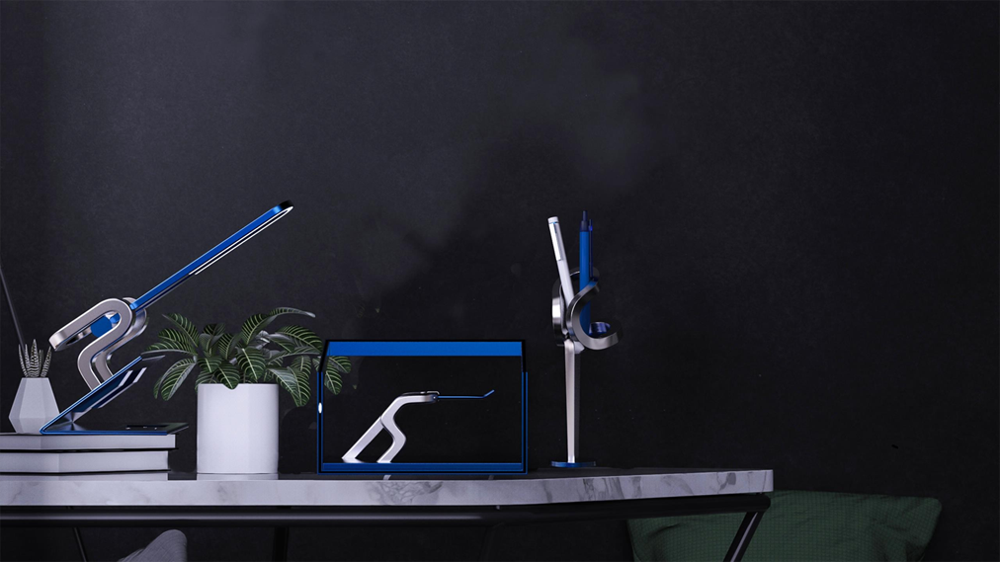
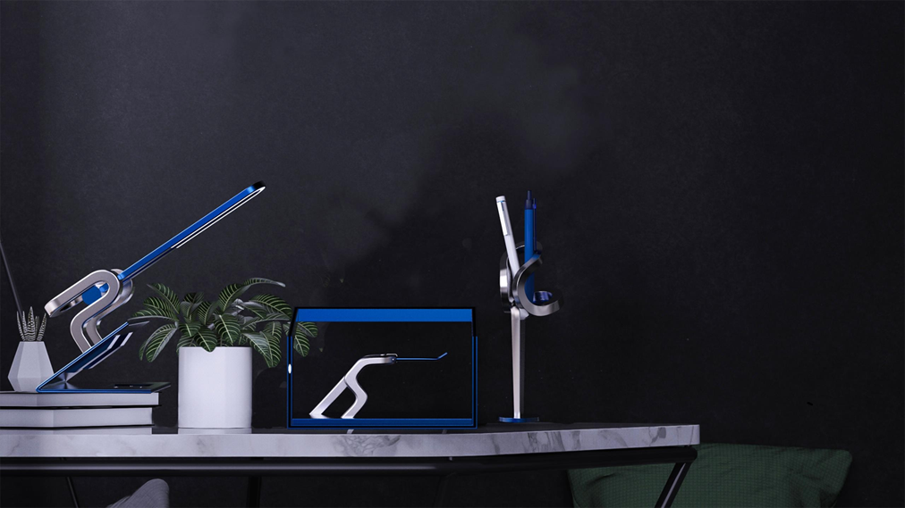

冬韵 | Good desktop design for the Winter Olympics
This design intends to capture some of the most characteristic and beautiful moments of ice and snow sports in the Winter Olympics and transform them into appropriate modeling language, giving them a suitable carrier.
users can think of the 2022 Winter Olympics and related sports of the Winter Olympics when they see the final design product or use it in the process, so as to achieve the purpose of promoting the Olympic spirit and popularizing the Olympic sports, Olympic culture and knowledge.
Use demonstration & live demonstration & model making
 


This design got the National First Prize of China Computer Design Competition In August，2021.
This design is a great challenge to myself in terms of styling. I am very grateful to my group classmates and my instructor for constantly reviewing and modifying sketches with each other. There are no sketches a few centimeters thick. There will be this design, and the later stage of the design is boring but when it can best reflect the depth of a person's design, we constantly modify the 3D model, compare repeatedly, and adjust the curve. Affirm yourself and make this design more perfect. In addition, the production of design effects (whether video or renderings, etc.) and the final presentation are inseparable from the technical help of our team. The design is very tiring, but I am really happy , a big thank you to the lovely people who have always supported and encouraged me.
Group members: Ketong Xu , Jing Liu , Yongbing xiong Instructor: Dr. Jiefeng Lv /Professor Jiefeng Lv